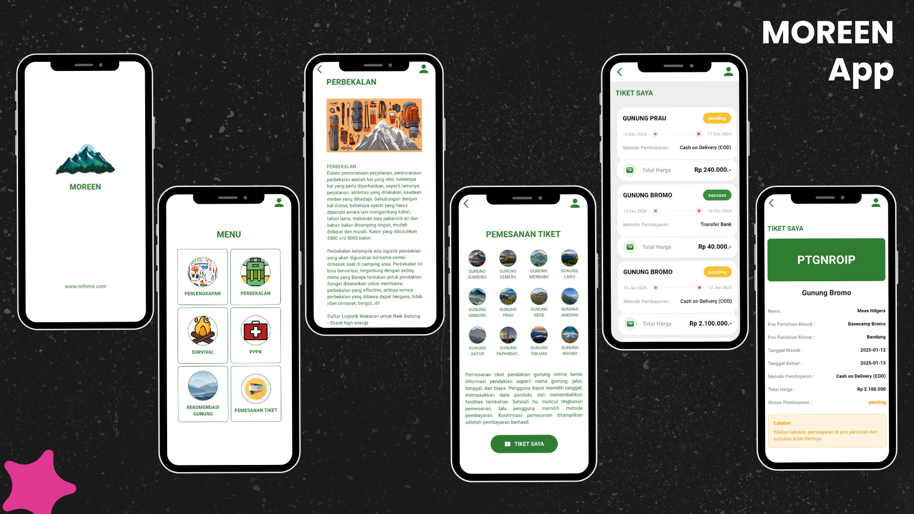
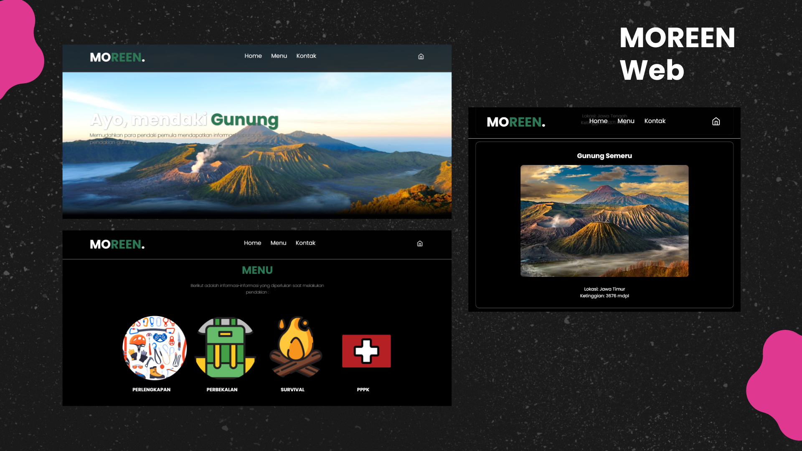

Projects
Mobile App
Project Name: MOREEN – Mountain Orientation & Readiness for Exploration and Environmental Navigation
Role: Fullstack Developer & UI/UX Designer
Tools: VSC, Flutter (Dart), Laravel (PHP), MySQL (XAMPP), REST API, Figma
Description: A cross-platform mobile app designed for beginner hikers, offering trail guidance, route planning, safety information, and booking services.
Key Features:
- Hiking guide with beginner-friendly UI
- Online ticket booking for hiking spots
- Emergency contacts and safety information

Web Projects
Project Name: MOREEN Admin & Web Guide System
Role: Fullstack Web Developer & UI/UX Designer
Tools: VSC, Laravel (PHP), MySQL (XAMPP), HTML, CSS, JavaScript, Figma
Description: A web-based support system for managing the MOREEN hiking platform.
Key Features:
- Admin dashboard with role management
- Hiking content editor (add/edit/delete trails)
- Ticket booking and schedule management

Skills
Languages
- Indonesia
- English
Technology
- HTML
- CSS
- JavaScript
- Responsive Design
- Design System
- Git & Version Control
Tools
- Figma
- Adobe Photoshop
- Miro
- Canva
Creative Skills
- Design Thinking
- Wireframing & Prototyping
- Interaction Design
- information Architecture
- User Research & Usability Testing
- Accessibility
- Technical Documentation
- Research & Problem Solving
- Camera Person/Videographer
- Video Editing
Experience
Mapala UTY (2022–2023)
- Drafted and managed organizational documents including activity proposals, official correspondence, and accountability reports for campus submission.
- Organized meeting agendas, recorded minutes, and maintained proper documentation of all internal and external activities.
- Supported coordination and logistics for nature-related activities such as hiking, basic training, and environmental programs.
Camera Person/Videography – KA Media Ministry (2022–2024)
- Captured and managed visual documentation for worship services and spiritual events, both onsite and online.
- Contributed to the production of creative video content for social media and weekly services, ensuring high-quality visuals and composition.
- Collaborated with the production team in preparing camera equipment, lighting, and audio, and assisted in basic editing processes.
Get in touch
For business inquiry please send email to